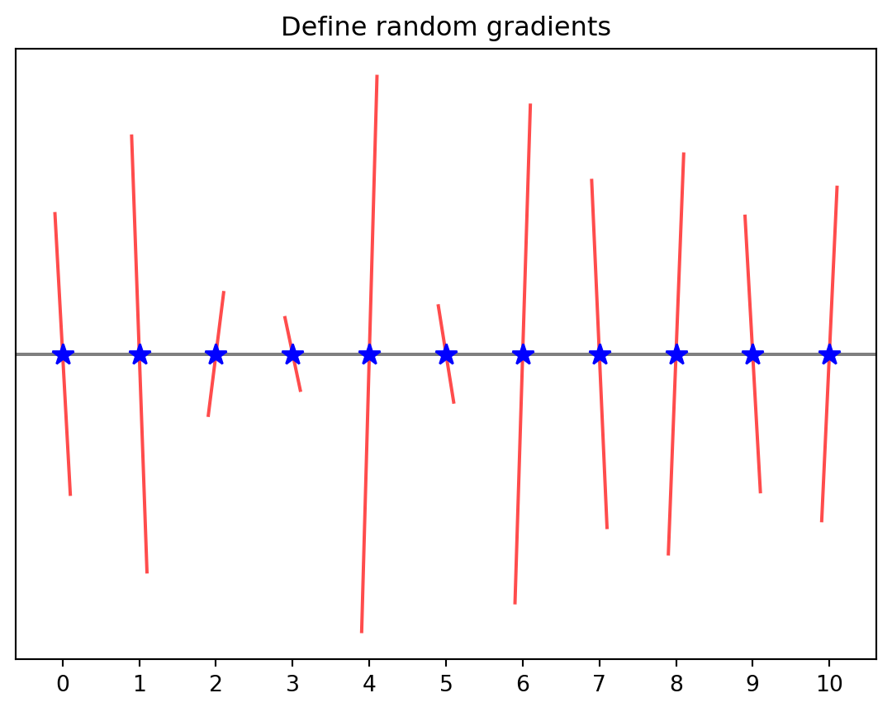
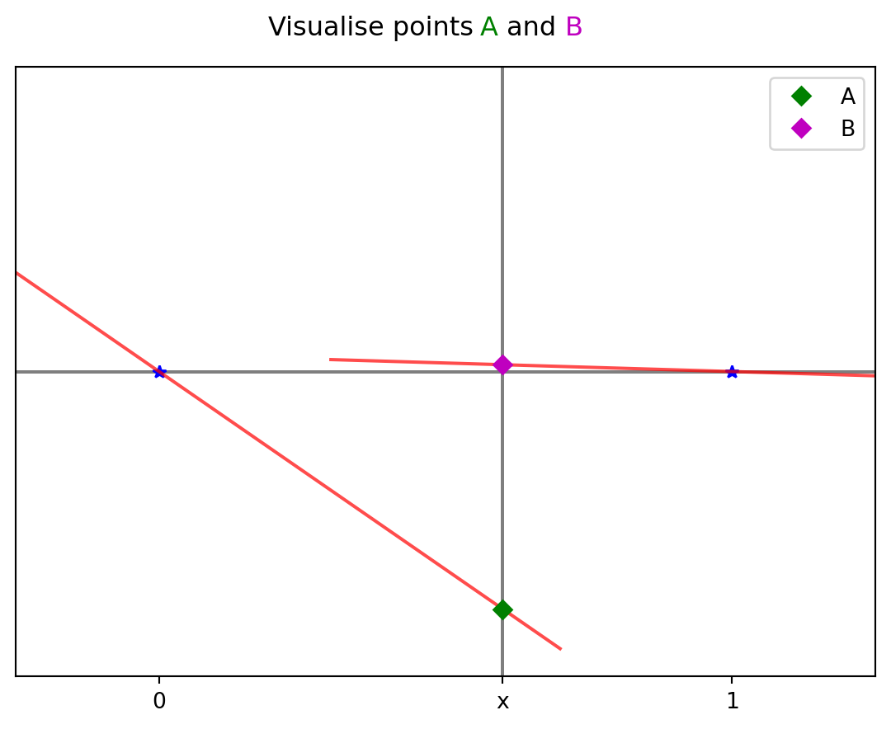
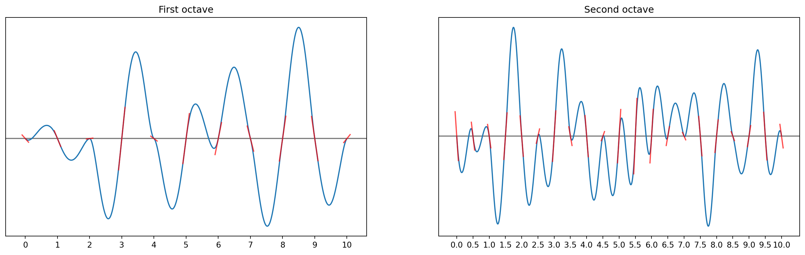

Perlin noise is a versatile and widely-used algorithm in computer graphics and simulation, renowned for generating natural-looking patterns and smooth transitions. Perlin developed his algorithm in the 1980s while working on Disney’s animated film Tron (1982), in order to improve the realism of computer generated imagery (CGI) at the time. Perlin received the Academy Award for Technical Achievement for his algorithm, who knew that mathematician/computer sicentists win Oscars too!
This post is inspired by an article in the IMA’s mathematics today [1], which focused on the mathematics used in video games. In this post I follow the authors description of Perlins algorithm, and provide example code to implement this algorithm in Python using only Numpy (and Matplotlib for visualisation).
Add a Pic of normal noise compared to Perlin noise
The algorithm in one dimension
To gain a conceptual understanding of the algorithm, as is often the case, we implement it first in a single dimension.
Step 1
First we need to define a set of regularly spaced points (nodes) along a line. Below shows an example where \(i=11\) nodes.
Code
import numpy as npimport matplotlib.pyplot as plt# Step 1) Form a set of regularly spaced points (called nodes)nodes = np.linspace(0, 10,11)y = np.zeros(len(nodes))plt.axhline(c='k', alpha =0.5)plt.plot(nodes,y, 'b*', markersize=10)plt.title("Define nodes")plt.xticks(nodes)plt.yticks([])plt.show()
Step 2
At each node we define a random vector with gradient \(m_i\) (where \(i = 1,2, …, 10\)). For this article we will follow [1] arbitrarily take \(-3 \leq m_i \leq 3\).
Code
# Step 2) At each node generate a random vector with# gradient m_i, arbritrarily set -3<= m_i <= 3a =-3b =3m = (b-a)*np.random.random(len(nodes)) + a# Define a function to visualise the random gradientsdef plot_grad(node,grad, spacing): area_around_node = np.linspace(node-spacing,node+spacing,11) y = grad*(area_around_node - node)return area_around_node, yfor i inrange(0,len(nodes)): w, s = plot_grad(nodes[i],m[i], 0.1) plt.plot(w,s,'r-', alpha =0.7)plt.axhline(c='k', alpha =0.5)plt.plot(nodes,np.zeros(len(nodes)), 'b*', markersize=10)plt.title("Define random gradients")plt.xticks(nodes)plt.yticks([])plt.show()

Step 3
If we consider an arbitrary point \(x\) in within the interval \([p,r]\) (in the example below we consider the first interval \([0,1]\)) and want to determine the point where the randomly generated vectors would intercept point \(x\). If we denote \(A\) the point where the random vector from the lower boundary of the interval will intercept then \(A = (x, mₚ(x - p))\) and the point \(B\) where the random vector from the upper node of the interval will intercept the point \(x\) is given by \(B = (x, - mᵣ(r- x))\). To simplify notation we will write \(A = (x, n_p)\) and \(B = (x, n_r)\) where we have taken: \(n_p = m_p(x - p)\), and \(n_r = - m_r(r - x)\).
Code
# Step 3) consider a point x where x is between 0,1 (i.e. between our 1st and 2nd node)# the points A = (x,m_0x), B = (x, -m_1 (1-x))# we will abritraily take x = 0.6 for this visualisationx =0.6plt.axhline(c='k', alpha =0.5,label='_nolegend_')plt.axvline(x,c='k', alpha =0.5,label='_nolegend_')plt.plot(nodes[0],0, 'b*',label='_nolegend_')plt.plot(nodes[1],0, 'b*',label='_nolegend_')for i inrange(0,2): w, s = plot_grad(nodes[i],m[i], 0.7) plt.plot(w,s,'r-', alpha =0.7,label='_nolegend_')A = m[0]*xB =-m[1]*(1-x)plt.plot(x, A,'gD')plt.plot(x,B, 'mD')plt.legend(["A","B"])plt.xlim([-0.25,1.25])plt.xticks([0,x,1],labels=["0", "x", "1"])plt.yticks([])# make a multicolored title plt.figtext(0.445, 0.92, "Visualise points", fontsize='large', color='k', ha ='center')plt.figtext(0.56, 0.92, "A", fontsize='large', color='g', ha ='right')plt.figtext(0.62, 0.92, "B", fontsize='large', color='m', ha ='left')plt.figtext(0.59, 0.92, ' and ', fontsize='large', color='k', ha ='center')plt.show()

Step 4
This is the key step. In order to create smooth more natural looking noise we use interpolation to find the value of the noise function at point x (i.e. noise function between nodes). Originally, Perlin used cubic interpolation function: \(f(x) = 3x² - 2x³\), and we will use this in the following (although he later changed it to a quintic function: \(f(x) = 6x^5 - 15x^4 - 10x^3\) ). This interpolation function ensures that the derivative of the noise function is continuous at every node, which is what gives Perlin noise its more natural look. The noise function between two nodes is the calculated as:
We note that \(\text{noise}(p) = \text{noise}(r) = 0\), this is a general property of the noise function and ensures continuity at each node. We also note that we have scaled the noise function according to the size and starting point of the interval, this ensures that the noise function is consistent between different interval sizes and starting points. Applying steps 1–4 across all the nodes we can create a different noise function between each interval. When we combine all the noise functions across the intervals together (concatenate them) we produce what is known as a single octave of Perlin noise. For a particular octave and interval we denote the noise function as \(\text{noise}_s,t(x)\). Then for a particular octave (\(s\)) the combination of noise functions across all interval is given by
In order to produce more realistic/natural looking images we combine several octaves of Perlin noise. This is achieved by using a vertical scaling factor and by increasing the number of nodes in each successive octave. Thus octave two will have \(20\) nodes, where the first interval will now be \([0,0.5]\) and the scaling factor will therefore be \(0.5\). Below I have plotted the fisrt two octaves of Perlin noise.
Code
# Step 4) use interpolation to find the value of the noise function at x# we will use the cubic interpolation function as in original Perlin noise# f(x) = 3x^2 - 2x^3# can also use quintic interpolation function: f(x) = # Interpolation functiondef f(x):return3.0*x*x -2.0*x*x*x# Calulate noise functiondef noise(interval,m0,m1,dx):''' Parameters ---------- interval : numpy array of float64 (vector) Begining and end nodes of interval. m0 : float64 The random gradient at the begingin node. m1 : float64 The random gradient at the end node. dx : int The number of intermediate values between the begining and end node at which to calculare the noise function. Returns ------- noise_return : numpy array of float64 (vector) The value of the noise function at intermediate points between beginig and end node x : numpy array of float64 (vector) The intermediate locations between beignig and end node at which the noise function was calulated. ''' intStart = interval[0] intEnd = interval[-1] intSize = intEnd - intStart x = np.linspace(interval[0], interval[1], int(np.round(dx * intSize)))#x = np.arange(interval[0],interval[1],dx) n0 = m0*(x-interval[0] ) n1 =-m1*(interval[1] - x) noise_return = n0*(1.0-f( (1/intSize)*(x-intStart))) + n1*f((1/intSize)*(x-intStart))return noise_return, xdx =100# calculate noise function between all nodesNOISE = np.array([]) # numpy array to store noise function accross all intervalsX = np.array([]) # numpy array to store the x value of the noise function between all nodesfor i inrange(0,len(nodes)-1): q,t = noise([nodes[i],nodes[i+1]],m[i],m[i+1],dx) NOISE = np.append(NOISE,q) X = np.append(X,t)# set up a subplot to plot the 1st and 2nd octave side by sidefig, (ax1, ax2) = plt.subplots(1, 2, figsize=(18, 5))# plot First octave of noiseax1.axhline(c='k', alpha =0.5) ax1.plot(X,NOISE)ax1.set_xticks(nodes)ax1.set_yticks([])ax1.set_title("First octave")# add the original random gradients to the plotfor i inrange(0,len(nodes)): w, y = plot_grad(nodes[i],m[i], 0.1) ax1.plot(w,y,'r-', alpha =0.7)# the first octave has a frequecy of 10 and a scaling of 1# Octave 2 will have a frequency of 20 so [0,0.5] will be the first intervaloctave_num =2octave2 = np.linspace(nodes[0], nodes[-1], len(nodes)*octave_num-1)m = (b-a)*np.random.random(len(octave2)) + a# calculate noise for all nodesNOISE2 = np.array([]) # noise function accross all intervalsX2 = np.array([])for i inrange(0,len(octave2)-1): q,t = noise([octave2[i],octave2[i+1]],m[i],m[i+1],dx) NOISE2 = np.append(NOISE2,q) X2 = np.append(X2,t)ax2.axhline(c='k', alpha =0.5)ax2.plot(X2,NOISE2)ax2.set_xticks(octave2)ax2.set_yticks([])ax2.set_title("Second octave")for i inrange(0,len(octave2)): w, y = plot_grad(octave2[i],m[i], 0.05) ax2.plot(w,y,'r-', alpha =0.7)plt.show()

Step 5
In general we can write the combination of several octaves (where we assume the scaling factor has not yet been applied) of noise as
\(equation = goeshearr 1+6\)
Lets combine the first two octaves of Perlin noise that we previously calculated.
Code
# Step 5) compute the weighted sum of two Octaves# finally combine the two octavessumOctaves = NOISE +0.5*NOISE2plt.axhline(c='k', alpha =0.5)plt.plot(X2,sumOctaves)plt.xticks(nodes)plt.yticks([])plt.title("Sum of first 2 octaves")plt.show()
In practice we often combine 6 or more octaves. To do this we will write a function that combines all the previous steps and allows us to combine as many octaves as we wish.
Code
# Step 5) compute the weighted sum of T=6 octaves# to do this we will write a function that performs all the previous steps# and can then combine as many octaves as we wantdef PerlinNoise1D(interval,numNodes,numOctaves,dx):''' Parameters ---------- interval : numpy array float64 (vector) beging and end of interval on which to produce Perlin noise. numNodes : int Number of nodes to use. numOctaves : int Number of Octaves of Perlin noise to combine dx : int Number of intermediate points along x axis at which to calculate the noise function. Returns ------- Noise_sum : numpy array float64 (vector) The sum of all octaves of noise function. T : numpy array float64 (vector) The x values at which the noise function has been calculated. ''' intSize = interval[1] - interval[0] Noise_sum = np.zeros(int(np.round(dx * intSize)))for n inrange(1,numOctaves+1):#print("Octave number = " + str(n)) Noise_current = np.array([]) # store noise function accross all intervals for a single octave T = np.array([])# Step 1) For a set of regularly spaced points (called nodes)if n ==1 : nodes = np.linspace(interval[0], interval[1], numNodes) current_size =len(nodes)else: nodes = np.linspace(interval[0], interval[1], current_size*2-1) current_size =len(nodes)# Step 2) at each node generate a random vector with# gradient m_i, arbritrarily set -3<= m_i <= 3 a =-3 b =3 m = (b-a)*np.random.random(len(nodes)) + a# Step 4) calculate the noise functionfor i inrange(0,len(nodes)-1): q,t = noise([nodes[i],nodes[i+1]],m[i],m[i+1],dx) Noise_current = np.append(Noise_current,q) T = np.append(T,t)# Step 5) calcualte the weighted sum of octaves Noise_sum = Noise_sum + (1/ (2**(n-1))) * Noise_currentreturn Noise_sum, T# input parameters interval = [0,10]numNodes =11;numOctaves =6dx =100000#reduce this if taking a long timetest, t = PerlinNoise1D(interval, numNodes, numOctaves, dx)plt.figure()plt.axhline(c='k', alpha =0.5)plt.plot(t,test)plt.title(str(numOctaves) +" Octaves of Perlin noise")plt.xticks(nodes)plt.yticks([])
Combining more octaves produces more fractal-like noise as finer structures are successively added.
The algorithm in two dimensions:
Now that we have an understanding of how the algorithm works in 1D lets look at how it generalises to 2D.
Step 1
Similarlly to the 1D case we start by generating a set of nodes, in the 2D case this will now be a grid of nodes. At each node we generate a random vector. Figure 1
Code
x = np.arange(0,4,1)y = np.arange(0,4,1)# In 2D are nodes are now a gridX,Y = np.meshgrid(x,y)a =-3b =3V = m = (b-a)*np.random.random([len(x)*len(y),2]) + a# normalise to unit vectorsfor i inrange(len(V[:,0])): norm = np.linalg.norm(V[i,:]) V[i,:] = V[i,:]/norm# scale the unit vectors to look nicer in the plotV = V*0.4# loop variablep =0plt.plot(X,Y,'o',color ='k')for i inrange(len(x)):for j inrange(len(y)): plt.arrow(x[i],y[j],V[p,0],V[p,1], color ="r", length_includes_head=True, head_width =0.05) p = p +1plt.title("Generate a random grid of vectors")plt.xlabel("x")plt.ylabel("y")plt.xticks(x)plt.yticks(y)plt.show()
Figure 1: Plot
Source Code
---title: "The Mathematics of Perlin noise"discription: "Understranding the mathematics behind Perlin noise, with an implementation in python"author: - name: "Nicholas Harbour"date: 04-01-2024categories: [Python, Maths] # image: preview-image.jpeg---Perlin noise is a versatile and widely-used algorithm in computer graphics and simulation, renowned for generating natural-looking patterns and smooth transitions. Perlin developed his algorithm in the 1980s while working on Disney's animated film Tron (1982), in order to improve the realism of computer generated imagery (CGI) at the time. Perlin received the Academy Award for Technical Achievement for his algorithm, who knew that mathematician/computer sicentists win Oscars too!This post is inspired by an article in the IMA's mathematics today \[1\], which focused on the mathematics used in video games. In this post I follow the authors description of Perlins algorithm, and provide example code to implement this algorithm in Python using only Numpy (and Matplotlib for visualisation).Add a Pic of normal noise compared to Perlin noise# The algorithm in one dimensionTo gain a conceptual understanding of the algorithm, as is often the case, we implement it first in a single dimension.## Step 1First we need to define a set of regularly spaced points (nodes) along a line. Below shows an example where $i=11$ nodes.```{python}import numpy as npimport matplotlib.pyplot as plt# Step 1) Form a set of regularly spaced points (called nodes)nodes = np.linspace(0, 10,11)y = np.zeros(len(nodes))plt.axhline(c='k', alpha =0.5)plt.plot(nodes,y, 'b*', markersize=10)plt.title("Define nodes")plt.xticks(nodes)plt.yticks([])plt.show()```## Step 2At each node we define a random vector with gradient $m_i$ (where $i = 1,2, …, 10$). For this article we will follow \[1\] arbitrarily take $-3 \leq m_i \leq 3$.```{python}# Step 2) At each node generate a random vector with# gradient m_i, arbritrarily set -3<= m_i <= 3a =-3b =3m = (b-a)*np.random.random(len(nodes)) + a# Define a function to visualise the random gradientsdef plot_grad(node,grad, spacing): area_around_node = np.linspace(node-spacing,node+spacing,11) y = grad*(area_around_node - node)return area_around_node, yfor i inrange(0,len(nodes)): w, s = plot_grad(nodes[i],m[i], 0.1) plt.plot(w,s,'r-', alpha =0.7)plt.axhline(c='k', alpha =0.5)plt.plot(nodes,np.zeros(len(nodes)), 'b*', markersize=10)plt.title("Define random gradients")plt.xticks(nodes)plt.yticks([])plt.show()```## Step 3If we consider an arbitrary point $x$ in within the interval $[p,r]$ (in the example below we consider the first interval $[0,1]$) and want to determine the point where the randomly generated vectors would intercept point $x$. If we denote $A$ the point where the random vector from the lower boundary of the interval will intercept then $A = (x, mₚ(x - p))$ and the point $B$ where the random vector from the upper node of the interval will intercept the point $x$ is given by $B = (x, - mᵣ(r- x))$. To simplify notation we will write $A = (x, n_p)$ and $B = (x, n_r)$ where we have taken: $n_p = m_p(x - p)$, and $n_r = - m_r(r - x)$.```{python}# Step 3) consider a point x where x is between 0,1 (i.e. between our 1st and 2nd node)# the points A = (x,m_0x), B = (x, -m_1 (1-x))# we will abritraily take x = 0.6 for this visualisationx =0.6plt.axhline(c='k', alpha =0.5,label='_nolegend_')plt.axvline(x,c='k', alpha =0.5,label='_nolegend_')plt.plot(nodes[0],0, 'b*',label='_nolegend_')plt.plot(nodes[1],0, 'b*',label='_nolegend_')for i inrange(0,2): w, s = plot_grad(nodes[i],m[i], 0.7) plt.plot(w,s,'r-', alpha =0.7,label='_nolegend_')A = m[0]*xB =-m[1]*(1-x)plt.plot(x, A,'gD')plt.plot(x,B, 'mD')plt.legend(["A","B"])plt.xlim([-0.25,1.25])plt.xticks([0,x,1],labels=["0", "x", "1"])plt.yticks([])# make a multicolored title plt.figtext(0.445, 0.92, "Visualise points", fontsize='large', color='k', ha ='center')plt.figtext(0.56, 0.92, "A", fontsize='large', color='g', ha ='right')plt.figtext(0.62, 0.92, "B", fontsize='large', color='m', ha ='left')plt.figtext(0.59, 0.92, ' and ', fontsize='large', color='k', ha ='center')plt.show()```## Step 4This is the key step. In order to create smooth more natural looking noise we use interpolation to find the value of the noise function at point x (i.e. noise function between nodes). Originally, Perlin used cubic interpolation function: $f(x) = 3x² - 2x³$, and we will use this in the following (although he later changed it to a quintic function: $f(x) = 6x^5 - 15x^4 - 10x^3$ ). This interpolation function ensures that the derivative of the noise function is continuous at every node, which is what gives Perlin noise its more natural look. The noise function between two nodes is the calculated as:$\text{noise}(x) = n_p + (n_r - n_p)f \left( \frac{x-r}{p-r} \right) = n_p \left(1 - f \left( \frac{x-r}{p-r} \right) \right) + n_r f \left( \frac{x-r}{p-r} \right)$We note that $\text{noise}(p) = \text{noise}(r) = 0$, this is a general property of the noise function and ensures continuity at each node. We also note that we have scaled the noise function according to the size and starting point of the interval, this ensures that the noise function is consistent between different interval sizes and starting points. Applying steps 1–4 across all the nodes we can create a different noise function between each interval. When we combine all the noise functions across the intervals together (concatenate them) we produce what is known as a single octave of Perlin noise. For a particular octave and interval we denote the noise function as $\text{noise}_s,t(x)$. Then for a particular octave ($s$) the combination of noise functions across all interval is given by$\text{Noise}_s(x) = \sum_{t=1}^{t=7} \text{noise}_{s,t}(x)$. In order to produce more realistic/natural looking images we combine several octaves of Perlin noise. This is achieved by using a vertical scaling factor and by increasing the number of nodes in each successive octave. Thus octave two will have $20$ nodes, where the first interval will now be $[0,0.5]$ and the scaling factor will therefore be $0.5$. Below I have plotted the fisrt two octaves of Perlin noise.```{python}# Step 4) use interpolation to find the value of the noise function at x# we will use the cubic interpolation function as in original Perlin noise# f(x) = 3x^2 - 2x^3# can also use quintic interpolation function: f(x) = # Interpolation functiondef f(x):return3.0*x*x -2.0*x*x*x# Calulate noise functiondef noise(interval,m0,m1,dx):''' Parameters ---------- interval : numpy array of float64 (vector) Begining and end nodes of interval. m0 : float64 The random gradient at the begingin node. m1 : float64 The random gradient at the end node. dx : int The number of intermediate values between the begining and end node at which to calculare the noise function. Returns ------- noise_return : numpy array of float64 (vector) The value of the noise function at intermediate points between beginig and end node x : numpy array of float64 (vector) The intermediate locations between beignig and end node at which the noise function was calulated. ''' intStart = interval[0] intEnd = interval[-1] intSize = intEnd - intStart x = np.linspace(interval[0], interval[1], int(np.round(dx * intSize)))#x = np.arange(interval[0],interval[1],dx) n0 = m0*(x-interval[0] ) n1 =-m1*(interval[1] - x) noise_return = n0*(1.0-f( (1/intSize)*(x-intStart))) + n1*f((1/intSize)*(x-intStart))return noise_return, xdx =100# calculate noise function between all nodesNOISE = np.array([]) # numpy array to store noise function accross all intervalsX = np.array([]) # numpy array to store the x value of the noise function between all nodesfor i inrange(0,len(nodes)-1): q,t = noise([nodes[i],nodes[i+1]],m[i],m[i+1],dx) NOISE = np.append(NOISE,q) X = np.append(X,t)# set up a subplot to plot the 1st and 2nd octave side by sidefig, (ax1, ax2) = plt.subplots(1, 2, figsize=(18, 5))# plot First octave of noiseax1.axhline(c='k', alpha =0.5) ax1.plot(X,NOISE)ax1.set_xticks(nodes)ax1.set_yticks([])ax1.set_title("First octave")# add the original random gradients to the plotfor i inrange(0,len(nodes)): w, y = plot_grad(nodes[i],m[i], 0.1) ax1.plot(w,y,'r-', alpha =0.7)# the first octave has a frequecy of 10 and a scaling of 1# Octave 2 will have a frequency of 20 so [0,0.5] will be the first intervaloctave_num =2octave2 = np.linspace(nodes[0], nodes[-1], len(nodes)*octave_num-1)m = (b-a)*np.random.random(len(octave2)) + a# calculate noise for all nodesNOISE2 = np.array([]) # noise function accross all intervalsX2 = np.array([])for i inrange(0,len(octave2)-1): q,t = noise([octave2[i],octave2[i+1]],m[i],m[i+1],dx) NOISE2 = np.append(NOISE2,q) X2 = np.append(X2,t)ax2.axhline(c='k', alpha =0.5)ax2.plot(X2,NOISE2)ax2.set_xticks(octave2)ax2.set_yticks([])ax2.set_title("Second octave")for i inrange(0,len(octave2)): w, y = plot_grad(octave2[i],m[i], 0.05) ax2.plot(w,y,'r-', alpha =0.7)plt.show()```## Step 5In general we can write the combination of several octaves (where we assume the scaling factor has not yet been applied) of noise as $equation = goeshearr 1+6$Lets combine the first two octaves of Perlin noise that we previously calculated.```{python}# Step 5) compute the weighted sum of two Octaves# finally combine the two octavessumOctaves = NOISE +0.5*NOISE2plt.axhline(c='k', alpha =0.5)plt.plot(X2,sumOctaves)plt.xticks(nodes)plt.yticks([])plt.title("Sum of first 2 octaves")plt.show()```In practice we often combine 6 or more octaves. To do this we will write a function that combines all the previous steps and allows us to combine as many octaves as we wish.```{python}# Step 5) compute the weighted sum of T=6 octaves# to do this we will write a function that performs all the previous steps# and can then combine as many octaves as we wantdef PerlinNoise1D(interval,numNodes,numOctaves,dx):''' Parameters ---------- interval : numpy array float64 (vector) beging and end of interval on which to produce Perlin noise. numNodes : int Number of nodes to use. numOctaves : int Number of Octaves of Perlin noise to combine dx : int Number of intermediate points along x axis at which to calculate the noise function. Returns ------- Noise_sum : numpy array float64 (vector) The sum of all octaves of noise function. T : numpy array float64 (vector) The x values at which the noise function has been calculated. ''' intSize = interval[1] - interval[0] Noise_sum = np.zeros(int(np.round(dx * intSize)))for n inrange(1,numOctaves+1):#print("Octave number = " + str(n)) Noise_current = np.array([]) # store noise function accross all intervals for a single octave T = np.array([])# Step 1) For a set of regularly spaced points (called nodes)if n ==1 : nodes = np.linspace(interval[0], interval[1], numNodes) current_size =len(nodes)else: nodes = np.linspace(interval[0], interval[1], current_size*2-1) current_size =len(nodes)# Step 2) at each node generate a random vector with# gradient m_i, arbritrarily set -3<= m_i <= 3 a =-3 b =3 m = (b-a)*np.random.random(len(nodes)) + a# Step 4) calculate the noise functionfor i inrange(0,len(nodes)-1): q,t = noise([nodes[i],nodes[i+1]],m[i],m[i+1],dx) Noise_current = np.append(Noise_current,q) T = np.append(T,t)# Step 5) calcualte the weighted sum of octaves Noise_sum = Noise_sum + (1/ (2**(n-1))) * Noise_currentreturn Noise_sum, T# input parameters interval = [0,10]numNodes =11;numOctaves =6dx =100000#reduce this if taking a long timetest, t = PerlinNoise1D(interval, numNodes, numOctaves, dx)plt.figure()plt.axhline(c='k', alpha =0.5)plt.plot(t,test)plt.title(str(numOctaves) +" Octaves of Perlin noise")plt.xticks(nodes)plt.yticks([])```Combining more octaves produces more fractal-like noise as finer structures are successively added.# The algorithm in two dimensions: {#sec-the-algorithm-in-two-dimensions}Now that we have an understanding of how the algorithm works in 1D lets look at how it generalises to 2D.## Step 1Similarlly to the 1D case we start by generating a set of nodes, in the 2D case this will now be a grid of nodes. At each node we generate a random vector. @fig-plot```{python}#| label: fig-plot#| fig-cap: "Plot"x = np.arange(0,4,1)y = np.arange(0,4,1)# In 2D are nodes are now a gridX,Y = np.meshgrid(x,y)a =-3b =3V = m = (b-a)*np.random.random([len(x)*len(y),2]) + a# normalise to unit vectorsfor i inrange(len(V[:,0])): norm = np.linalg.norm(V[i,:]) V[i,:] = V[i,:]/norm# scale the unit vectors to look nicer in the plotV = V*0.4# loop variablep =0plt.plot(X,Y,'o',color ='k')for i inrange(len(x)):for j inrange(len(y)): plt.arrow(x[i],y[j],V[p,0],V[p,1], color ="r", length_includes_head=True, head_width =0.05) p = p +1plt.title("Generate a random grid of vectors")plt.xlabel("x")plt.ylabel("y")plt.xticks(x)plt.yticks(y)plt.show()```